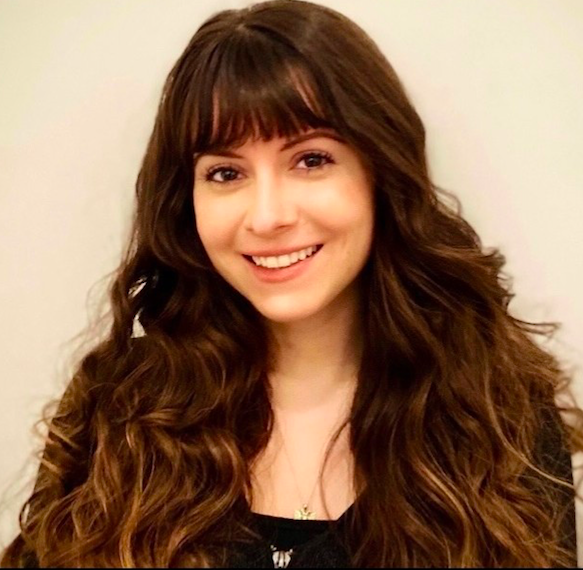
Angie Zenuni
Senior Talent Acquisition Lead at Environmental Defense Fund
Angie is an HR professional with experience in various industries. Currently, she's a recruiter for an environmental non-profit and is drawn to mission driven organizations. She obtained her Bachelor's degree from Binghamton University, and her Master's from Georgetown University. She immigrated to NYC when she was 5, and is currently based in Brooklyn, NY. She hopes to provide mentorship to students looking for support with college/graduate school applications, as well as young professionals seeking career coaching and guidance.

Arban Gjyzari
Computer Science Student, Georgia Institute of Technology
Arban is a freshman studying Computer Science at Georgia Institute of Technology. His passion about technology and programming is reflected in both his academics and extracurricular involvement. As he recently went through the college application process himself, he is excited to help every prospective Albanian student accomplish their goals.
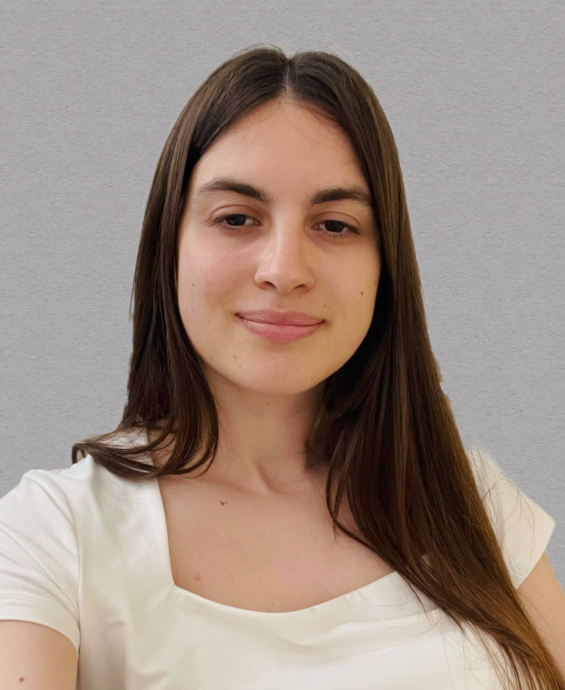
Aridona Qakici
Master of Science in FinTech, Brandeis International Business School
Aridona graduated from Brandeis International Business School, earning a Master of Science degree with a concentration in FinTech. She has a strong interest in investments, technology, data science, and statistics. She completed her Bachelor's in Finance and Master's in Accounting in Shkoder, Albania. Aridona believes that making Albanian students aware of the vast opportunities available is a critical step towards a successful career.

Arjana Kaba
Bioengineering Graduate, Rhine-Waal University of Applied Sciences
Arjana is a graduate of Rhine-Waal University of Applied Sciences, holding a degree in Bioengineering. With a strong academic and research background, she has gained hands-on experience in advanced analytical techniques through her thesis work. Arjana wants to inspire young Albanians to develop a passion for science and research, especially in bioengineering.
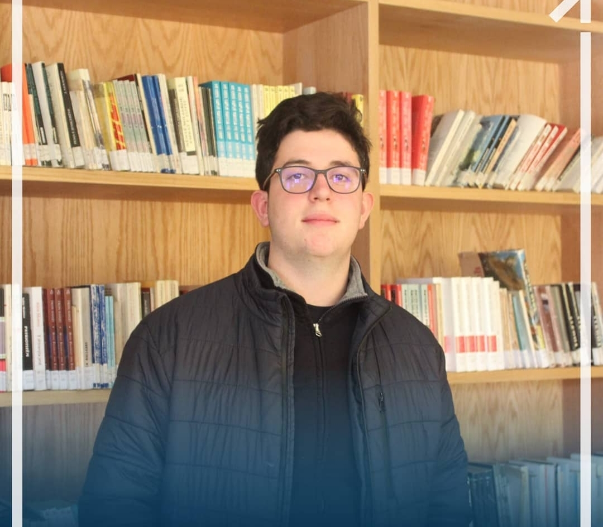
Arlind Kamberi
Medicine Student, Charité Universitätsmedizin Berlin
Being a part of Charité University in Berlin has allowed Arlind to gain profound knowledge in the field of medicine. Having gone through the challenging process of researching the right university and navigating the application process himself, he is passionate about giving back and helping aspiring students make informed decisions during their application journey.
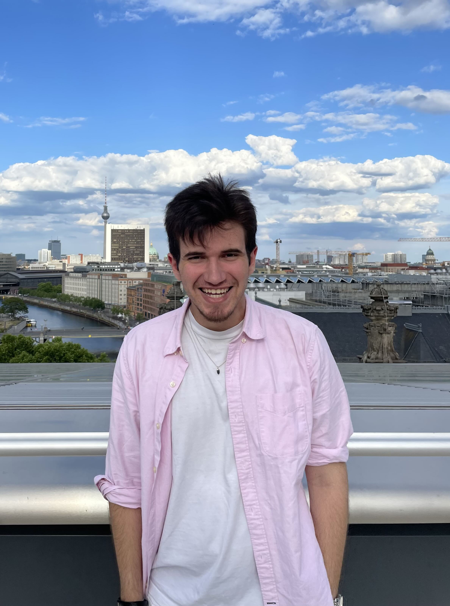
Darli Seranaj
Mathematics & Computer Science Student, Duke University
Darli, a junior at Duke University, is pursuing a double major in Mathematics and Computer Science with a minor in Finance. He attended Aiglon College in Switzerland on a full scholarship and completed the International Baccalaureate program. He has experience in mentoring as a Teaching Assistant and is currently working as a research assistant on two data-related projects. He is excited about mentoring young aspiring Albanian students.

Denis Lalaj
Computer Engineering Student, University of British Columbia
Denis is currently pursuing a Bachelor of Applied Science in Computer Engineering at the University of British Columbia (UBC), where his passion for technology shines through. With a stellar academic background and a deep understanding of his field, he brings invaluable expertise to our mentorship program.

Dorentina Humolli
PhD Student, ETH Zürich
Dorentina is pursuing her PhD at ETH Zurich, researching the biology of bacteriophages and their potential applications in clinics and biotechnology. Born and raised in Kosova, she understands the unique challenges that Albanian students face, especially in STEM fields. She’s here to share her journey and offer practical advice.

Edera Dibra
International Business Student, Baruch College
Edera is a senior at Baruch College, pursuing a Bachelor of Business Administration with a major in International Business, concentrating in Finance, and a minor in Political Science. Deeply passionate about driving meaningful change on a global scale, she is currently completing her second term as an intern with UNICEF USA.

Egzona Morina
Lecturer / Postdoctoral Associate, Harvard University
Egzona is a neuroscientist who earned her master’s at Columbia University, worked at NYU, and earned her PhD in neuroscience at University College London. She completed a postdoc at MIT’s Digital Learning lab and is currently moving into environmental neuroscience at Harvard Medical School. She also founded the Xheladin and Xhufe Morina Foundation to promote STEM education for students in Kosovo.

Elisa Stefani
Master of International Affairs Student, Columbia University
Elisa is pursuing a Master of International Affairs at Columbia University, specializing in Economic and Political Development. With a strong background in public service, including her role with the New York Immigration Coalition, she has developed expertise in grant management, policy development, and community support. She is passionate about advancing social justice and fostering international collaboration.
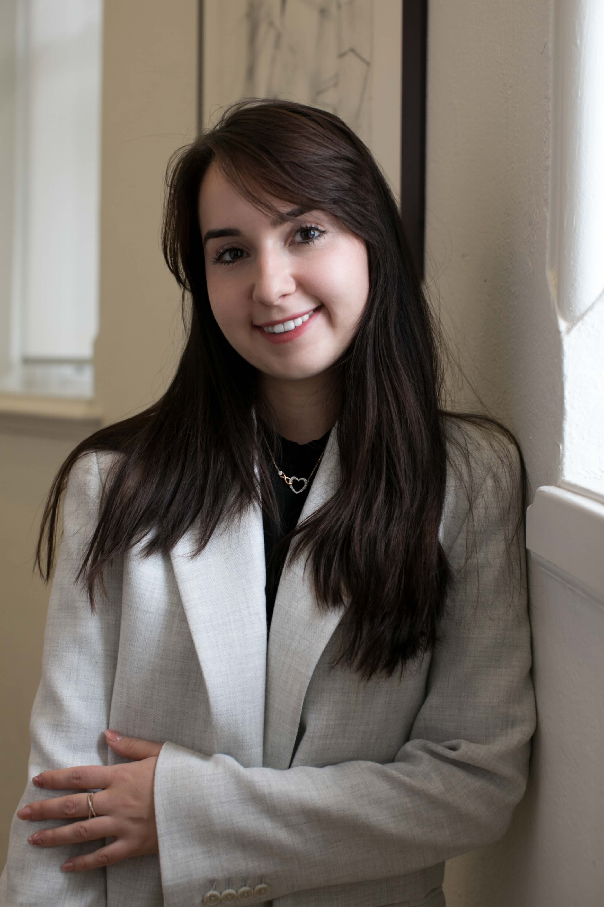
Emel Tabaku
Junior Policy Analyst, Public Safety Canada
Emel is a Master of Public Policy Candidate at the University of Toronto and holds a BFA from OCAD University. She is the Founder and Executive Director of RCAD Initiative, an NGO that empowers underrepresented youth through storytelling mentorship and entrepreneurial skills training. Emel has served as a Junior Consultant with UNDP Accelerator Labs Indonesia.
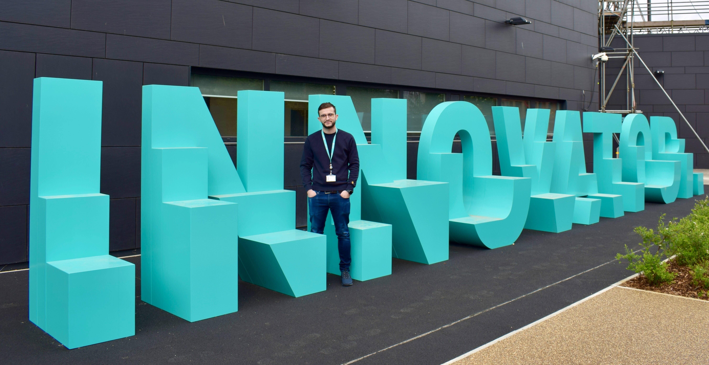
Erdi Mehaj
Accounting & Finance Student, University of East London
Erdi is in the final year of his undergraduate studies, pursuing a bachelor’s degree in Accounting and Finance. His passion and curiosity for the discipline drive him to engage in extensive study and exploration. His professional involvement in the financial services industry enhances his ability to be a strong mentor.

Ersilda Çako
President of Computing Club, University of Maine
Ersi is a senior at the University of Maine pursuing Computer Science. She has gained experience as a developer and researcher in labs such as VEMI and PERC, and completed internships with Labcorp and Black Bear Consulting Corps. She serves as a Resident Assistant and President of the Computing Club. She believes that with the right resources and support, anyone can succeed in any field.
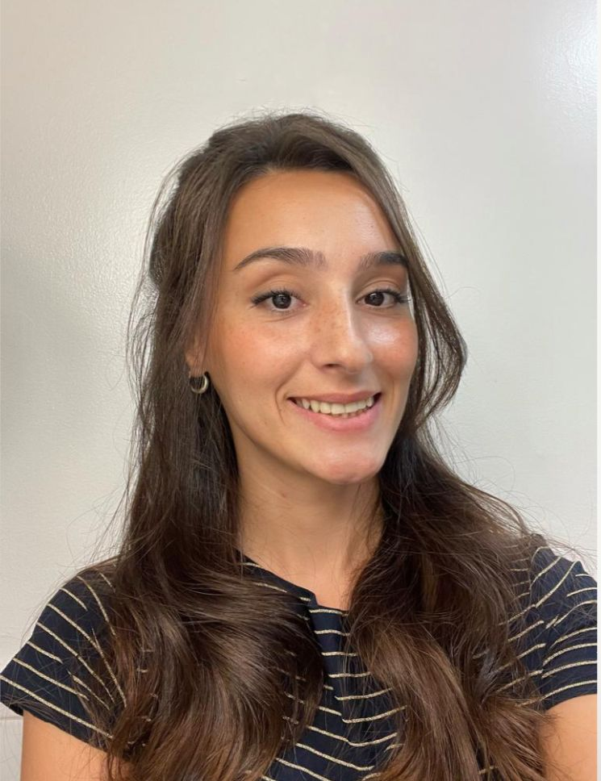
Eugerta Avdulaj
Medical Doctor, Future Resident, Washington DC
As a medical doctor and future Resident based in Washington DC, Eugerta has witnessed the unique challenges that Albanian medical students encounter. Having experienced similar hurdles during her educational journey, she is passionate about providing guidance and support to aspiring medical professionals in Albania.

Fabio Hodo
Operations Research Graduate, Columbia University
Born and raised in Tirana, Fabio moved to the US for university — first at the University of Minnesota to study Aerospace Engineering, then to New York to study Operations Research and Financial Engineering at Columbia. Interested in all things math and finance.

Florjan Plepi
Junior Architect, Spitzer School of Architecture Graduate
As a graduate of the Spitzer School of Architecture with extensive experience in project management and construction, Florjan is currently working as a Junior Architect while pursuing his passion for real estate development in New York City. His goal is to pursue a Master’s in Real Estate Development.

Jessica Plepi
Political Science Student, Baruch College
Jessica is a senior at Baruch College majoring in Political Science, also pursuing a Social Justice certificate at Harvard Extension School. She aims to attend law school and become a corporate lawyer. As a legal fellow in Barcelona and Lyon, she gained experience across 18+ areas of law. Born in New York with roots in Shkoder, she is committed to supporting young Albanians.
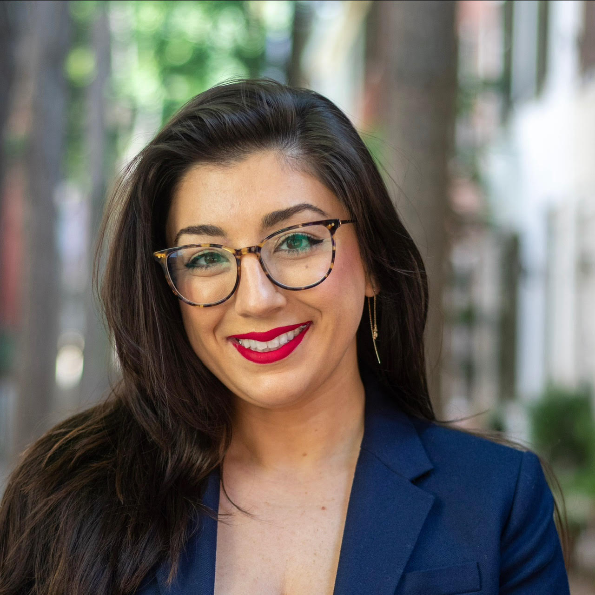
Kristel Tupja Barnett, Esq.
Senior Legal Counsel, Audacy
Kristel is a media and entertainment attorney for Audacy. She obtained her Bachelor’s from Suffolk University and her Juris Doctor from William & Mary Law School. She immigrated to Boston when she was 5, and was the first in her family to apply to college and law school outside of Albania. She hopes to provide mentorship to students looking to attend college and graduate school.
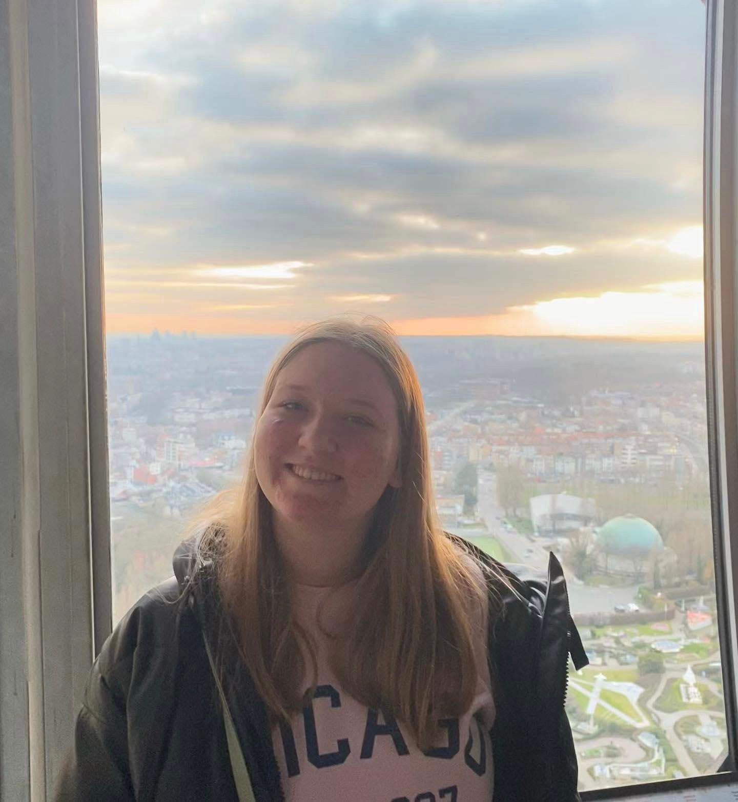
Livia Dyrmishi
Business Administration Student, Budapest Business School
Livia is studying Business Administration and Management at Budapest Business School on the Stipendium Hungaricum scholarship. She experienced first-hand how hard it is to look for the right school and apply for opportunities, so she would love to help out and give advice to young students starting the application process.
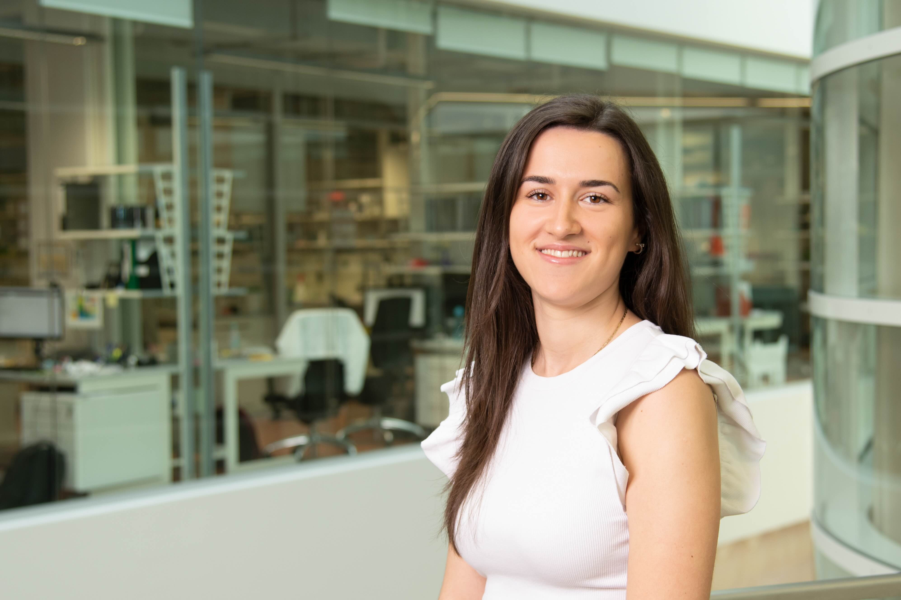
Marjana Ndoci
Research Assistant, Max Planck Institute for Biology of Ageing
Marjana is a graduate of the University of Ioannina, holding a master’s degree in biology. Currently working at the MPI for Biology of Ageing, she has earned a position at Harvard University for her PhD studies. She is eager to assist fellow Albanians in navigating and discovering opportunities to help them reach their goals.

Marsida Stafa
Research Assistant in Clinical Trials, WCH and UHN, Toronto
Marsida earned her MD degree in 2012 in Albania and worked as a Family Doctor for three years. Since 2019, she has been living in Toronto, working as a Research Assistant in clinical trials at Women’s College Hospital and the University Health Network. Her goal is to become a Family Doctor or Internist in Canada.

Meleq Hoxhaj
Economist and Researcher
Meleq is an economist and researcher with over 5 years of experience in economic analysis and research. His work focuses on market trends, policy development, and identifying opportunities for economic improvement. He has published extensively on Albania’s economy, covering topics such as foreign direct investment, tax compliance, and labour market trends.

Mirjeta Pasha
Assistant Professor, Virginia Tech
Dr. Mirjeta Pasha is an Assistant Professor of Data and High-Performance Computational Mathematics at Virginia Tech. Her research focuses on high-dimensional data analysis, inverse problems, and high-performance computing. Before Virginia Tech, she was a National Science Foundation Postdoctoral Fellow at MIT and Tufts University. She earned her PhD from Kent State University and completed her undergraduate studies at the University of Tirana.
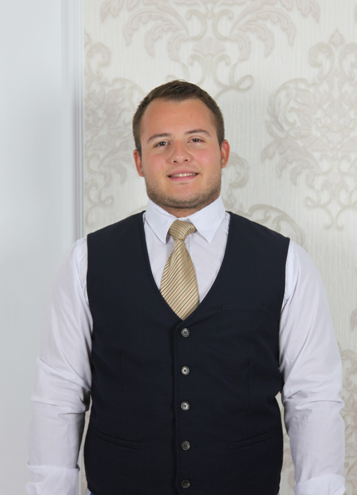
Ruel Domi
Finance & Political Science Student, Concordia College
Ruel is a Concordia College student double-majoring in Finance and Political Science. He has been involved in The Scheel Fund, Mock Trial, and Student Government. He interned at a law firm and at the Central Bank of Albania, and completed a Virtual Insights Series Program with Goldman Sachs. As a mentor, he hopes to assist Albanian students in Albania and abroad.